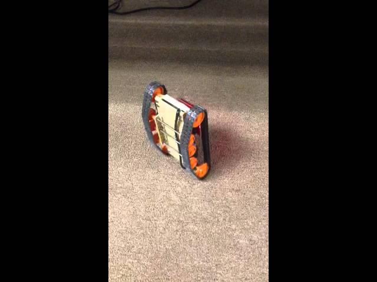
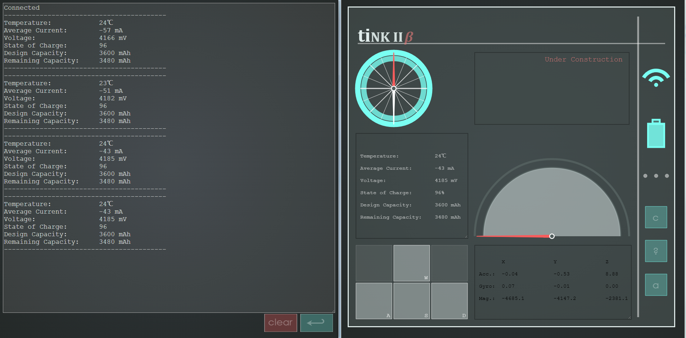

TInk (I & II) Texas Instruments, Inc. Summer Internship

Project Description
TInk is a small toy tank programmed by a team of interns using Texas Instruments, Inc. development software and microprocessors. My project during the first year (TInk I) was to assist the tank in driving straight, using a proportional controller. The second year (TInk II), I designed the user interface that allowed the user to drive the tank, as well as inform the user of the tank's status, making use of the tank's telemetry. The second iteration of the tank was far more stable hardware-wise and made use of fewer boards.
Languages Used: C, Javascript, HTML, CSS
Project Links
Image Gallery
Click the below images to enlarge them (make sure your browser has scripts enabled)
TInk II UI